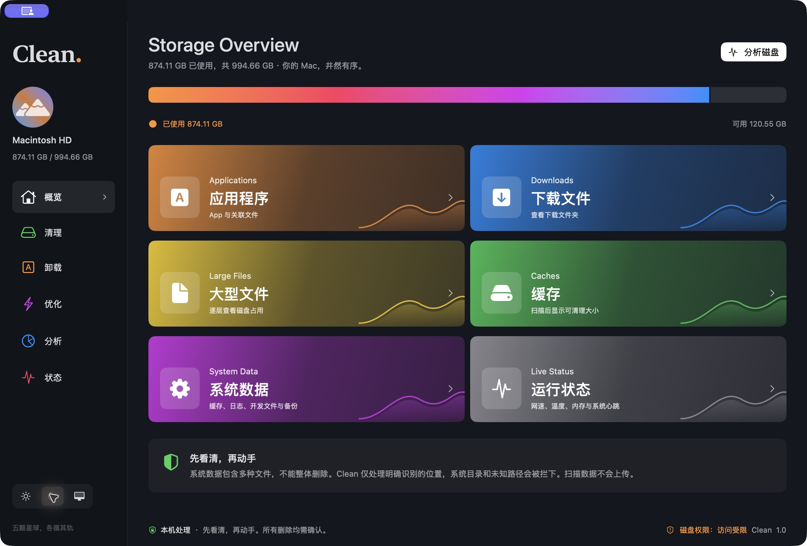
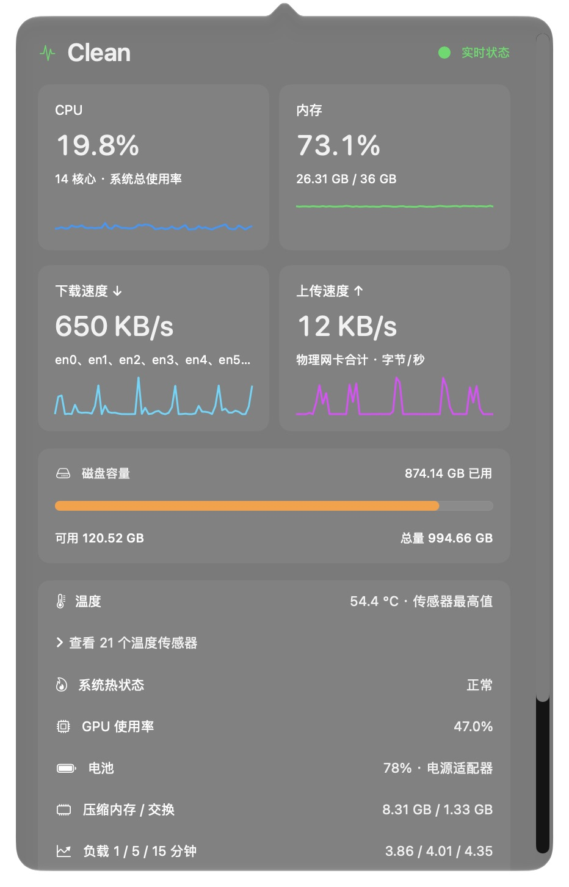

清理雨洗旧土，尘随潮去。
识别用户缓存、沙盒、浏览器、Electron 与开发工具缓存，兼顾 Xcode 和设备备份。支持全选，逐项审查后处理。
从堆积的缓存，到藏得很深的大文件。
用一个安静的原生应用，看清、整理，然后轻装再行。
Apple Silicon · macOS 27+ · 约 4.9 MB

一个 Clean，五种从容
整理文件、照看系统，各有边界。
你始终知道它在做什么，也知道下一步会发生什么。
为 Mac 而做。
也为你的安心而做。
识别用户缓存、沙盒、浏览器、Electron 与开发工具缓存，兼顾 Xcode 和设备备份。支持全选，逐项审查后处理。
审查偏好设置、支持文件、容器和启动项。个人数据默认保留，共享文件明确标注，上次启动或最近使用时间一目了然。
刷新 DNS、重建 Spotlight 索引、查看本地快照。需要管理员权限时由 macOS 授权，不保存你的密码。
用矩形树图查看目录占用，逐层深入。最多 4 路后台并发，结果边扫边显示，随时取消。
CPU、内存、上下行网速、磁盘、电池与温度。收起窗口后，菜单栏里仍有一方小小的仪表盘。
好看，也好用
浅色清晰，深色沉静。也可以跟着系统，顺其自然。
一眼，就有数
点一下菜单栏，看看 Mac 此刻的状态。
关掉主窗口，监控仍在；真正退出，由你决定。
最近采样曲线
CPU / 内存 / 网速更新
温度与 GPU 依机型和系统接口支持。磁盘、电源与传感器每 5 秒更新；无法读取时明确提示。
查看完整状态界面
它的边界
清理工具最重要的能力，是知道何时该停下。
文件路径与扫描结果在本机处理。应用不上传扫描数据，官网也不加载第三方统计脚本。
先展示路径、大小与关联说明。卸载项目移入废纸篓，个人数据默认保留；普通缓存与日志删除前明确提示。
拦截未知路径与符号链接。识别到共用容器和系统服务时保留，不把整个“系统数据”当作删除目标。
下载之前
不能，也不应该。“系统数据”是 macOS 的汇总分类。Clean 只处理明确识别的缓存、日志、开发文件与备份，受保护的系统目录不会直接删除。APFS 快照和共享块也会影响实际释放空间。
当前 1.1.0 安装包支持搭载 Apple Silicon 的 Mac，需要 macOS 27 或更新版本，暂未提供 Intel 安装包。温度传感器和 GPU 数据的可用性因机型而异。
打开 DMG，将 Clean 拖入“应用程序”。首次运行后，按提示在“系统设置 → 隐私与安全性 → 完全磁盘访问权限”中添加已安装的 Clean.app，开启后重新打开应用。安装包与应用均已通过 Apple 公证并附加票据。
Clean 会列出明确匹配的关联文件，让你逐项选择。个人数据默认不勾选，共用文件、系统级后台服务和特权辅助工具可能需要保留或使用厂商卸载器。遇到权限不足会列出失败原因，不保证所有软件都能完全清除。
正在运行的应用和 Clean 观察到的启动，可以记录准确启动时间。没有历史启动记录时，会尝试读取 Spotlight 的最近使用时间并标注来源；没有数据时显示“暂无记录”，不会推测。
1.1.0 已提供五个功能入口，但尚未覆盖所有缓存类型、完整维护任务、进程监控与指标排序置顶。Time Machine 目前只支持查看本地快照，不自动精简或删除。完整范围可在仓库 README 中查看。